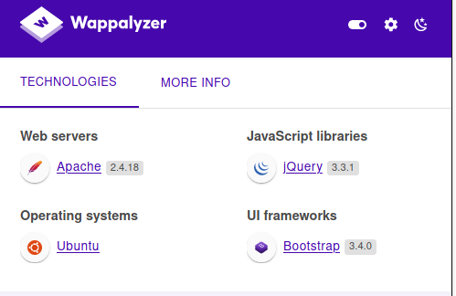
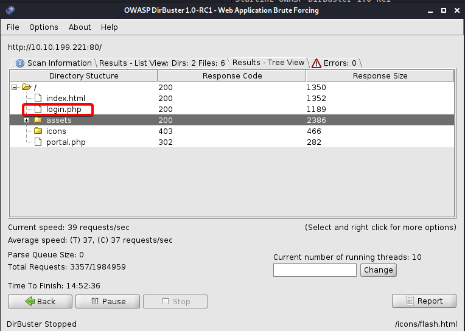

Pickle Rick
Primero comenzaremos realizando un scanning a nuestro target en nuestro caso la ip 10.10.199.221. En este caso usaremos nuestro querido y amado NMAP, para realizar la primera fase de enumeración.
nmap -sS --min-rate=5000 -p- -Pn -n -vvv 10.10.199.221 -oG allports
Info
-sS >> Realizamos un Sync port scan, esto hace que el escaneo sea más rápido debido a el método que utiliza.
--min-rate=5000 >> No emitir paquetes menores de 5000 por segundo.
-p- >> Hacer scanning en todos los puertos 65535.
-Pn >> Esto es para skipear el host discovery.
-n >> Para no hacer resolución DNS.
-vvv >> Indicamos un triple verbose, para que nos brinde información.
-oG >> indicamos que el output del scanning se guardará en formato grep-peable en el fichero que especificamos.
Estos fueron los puertos que se encontraron abiertos durante el escaneo:
PORT STATE SERVICE REASON
22/tcp open ssh syn-ack ttl 61
80/tcp open http syn-ack ttl 61
Como vemos que tenemos el puerto 80/tcp abierto, de lejos nos indica a que puede ser una página web, por lo tanto vamos a comprobar. Y... Efectivamente es una página web, pudimos extraer información de la misma utilizando ciertos plugins dentro del navegador.

La página es la siguiente, y vemos que nos deja algunos hints dentro de ella.

Vemos que hemos conseguido un User potencial.
Username: R1ckRul3s
Ahora para seguir haciendo un poco de enumeración manual, accederemos al robots.txt, para verificar que existe, y efectivamente es así, vemos que solo hay unas cuántas letras random, pero la tendremos aquí, deberán servir para algo:
Wubbalubbadubdub
Ahora procederemos a realizar un poco de fuzzing con dirpbuster, estos fueron los parámetros que utilizamos:
dirbuster -l /usr/share/wordlists/rockyou.txt -e html,php -u http://10.10.199.221
Info
-l para indicar el wordlist que usaremos.
-e para indicar las extensiones que usaremos.
-u para indicar nuestro target.
Esperando unos segundos para el resultado nos encontramos con un portal de login que tiene la página, con el nombre de login.php, también nos encontramos con un portal.php, pero este nos redirige a login.php.
